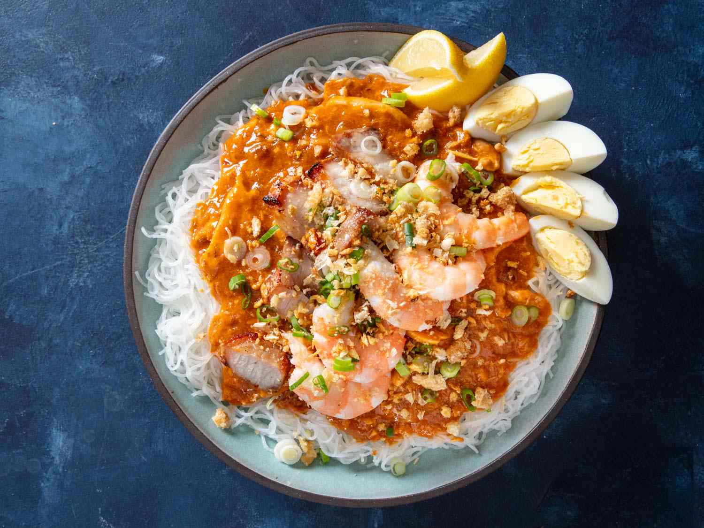

Palabok

Thin noodles covered with an orange broth that is from pork broth, ground pork, and annatto powder. It is also served with shrimp and boiled eggs
Palabok is sweet and can be eaten in breakfast, lunch, or dinner, It can also be eaten with fried pork rinds or with a steamed rice cake.
Ingredients
Sauce Ingredients
- 500 grams rice noodles bihon
- 2 tbsp. cooking oil
- 1/2 ground pork
- 1 tbps. annatto powder
- 3 cups pork broth
- 1 piece shrimp bouillon
- 6 tbsp. all-purpose flour
- 2 tbsp. fish sauce
- 1/2 tsp. ground black pepper
Topping Ingredients
- 1 cup pork belly boiled and sliced thinly into small pieces
- 4 ounces firm tofu fried and sliced into cubes
- 1/2 cup tinapa flakes smoked fish
- 1/2 cup chicharon pounded
- 2 hard boiled eggs sliced
- 1/2 cup cooked shrimps boiled or steamed
- 1/4 cup green onion or scallions finely chopped
- 3 tbsp. toasted garlic
- 2 lemons sliced
Steps
- Soak the rice noodles in water for about 15 minutes. Drain and set aside.
- Cook the sauce by heating a saucepan. Pour-in the cooking oil.
- When the oil is hot enough, put-in the ground pork and cook for about 5 to 7 minutes.
- Dilute the annatto powder in pork broth then pour the mixture in the saucepan. Bring to a boil (if you are using annatto seeds, soak them first in 3 tbsp. water to bring-out the color).
- Add the shrimp cube and stir and simmer for 3 minutes.
- Add the flour gradually while stirring.
- Add the fish sauce and ground black pepper then simmer until sauce becomes thick. Set aside.
- Meanwhile, boil enough water in a pot.
- Place the soaked noodles in a strainer (use metal or bamboo strainer) then submerge the strainer in the boiling water for about a minute or until the noodles are cooked. (make sure that the noodles are still firm)
- Remove the strainer from the pot and drain the liquid from the noodles.
- Place the noodles in the serving plate.
- Pour the sauce on top of the noodles then arrange the toppings over the sauce.
- Serve with a slice of lemon or calamnsi. Share and enjoy!